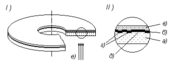
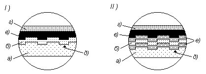
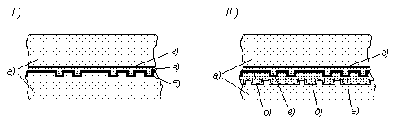

3.2. Запоминающие устройства на оптических дисках
3.2.1. Оптические дискиНакопители на оптических дисках являются относительно "молодым" видом запоминающих устройств, разработанных в восьмидесятых годах прошлого столетия. Как и некоторые другие технологические новинки, оптические диски появились в вычислительной технике из другой области: из цифровой звукозаписи. Однако им удалось довольно быстро занять прочное место в общей иерархии памяти ЭВМ (и не только!) в качестве устройств, используемых для долговременного хранения больших объемов информации.
В отличие от жестких дисков, в которых привод и носитель входят в состав одного устройства, оптические диски съемные и являются самостоятельными компонентами, а привод представляет собой отдельное устройство.
Оптические диски изготавливаются из пластмассы, на поверхность которой наносится отражающий слой. Для записи информации используется различие интенсивности (или фазы) отраженного света, соответствующего нулю и единице данных, возникающее за счет углублений (ямок, pits), формируемых в отражающем слое, либо за счет изменения коэффициента отражения света от этого слоя.
В отличие от жесткого диска на большинстве оптических дисков информация размещается не на множестве концентрических дорожек (цилиндров), расположенных с обеих сторон магнитного диска, а на одной спиральной дорожке, расположенной (обычно) с одной стороны оптического диска и начинающейся с его центральной части. Ширина ямок на дорожке 0,5 мкм, шаг спирали - 1,6 мкм, что дает более 22 тысяч витков спирали на диске диаметром 120 мм.
Информация считывается при освещении диска лазерным лучом с длиной волны порядка 0,6 - 0,8 мкм. Ровные поверхности (как ямки, так и их отсутствие) соответствуют нулевым битам, перепады высот (края ямок) - единичным битам (это соответствует методу записи "без возврата к нулю" на магнитных поверхностях). Протяженность ровной поверхности определяет количество подряд идущих нулей. Минимальная длина ямки (две "1" подряд) составляет порядка 1 мкм. Нетрудно подсчитать, что плотность записи информации в этом случае для обычных оптических дисков составит порядка 0,5 Гбит/кв. дюйм, т.е. примерно в 100 раз меньше, чем у жестких магнитных дисков. Также, как и для жестких дисков, плотность записи зависит от возможности точного позиционирования механизмов записи/считывания, а также от точности фокусировки светового луча и размера светового пятна, попадающего на отражающую поверхность. Для простых оптических дисков диаметр пятна составляет 0,9 мкм. В перспективных разработках смогли уменьшить размер пятна до 0,1 мкм и менее.
При указанных типовых размерах на диске можно было поместить около 700 Мбайт информации.
Первые оптические диски, параметры которых и приведены выше, получили название компакт-дисков или CD (Compact Disk), а поскольку они не допускали записи (изменения хранимой) информации, то их, по аналогии с постоянными ЗУ (Read-Only Memory), стали называть CD-ROM, хотя это название точнее отнести к паре диск-привод, считывающий с диска информацию.
В настоящее время используются различные типы оптических дисков, различающиеся:
- по типу носителя;
- возможности смены информации, записанной на диске;
- формату хранения данных;
- способу записи и некоторым другим особенностям.
По типу носителя различают компакт-диски (CD) и DVD диски (Digital Versatile Disks - цифровые универсальные диски). Собственно говоря, DVD можно рассматривать как следующее поколение оптических дисков, обеспечивающее более высокую плотность хранения информации и скорость передачи данных за счет иной организации носителя.
Компакт-диски в стандартном варианте допускают запись 650 - 700 Мбайт информации, хотя в лабораторных разработках достигнуты величины на 3 порядка выше.
DVD диски внешне похожи на CD диски и по размерам, и по материалу, из которого изготовлена их основа. Однако они имеют несколько иную организацию. Во-первых, размеры ямок и шаг витков спиральной дорожки DVD в два с лишним раза меньше, чем у CD (шаг витка 0,74 мкм вместо 1,6 мкм, а минимальная длина ямки 0,4 мкм вместо 0,84 мкм). Во-вторых, на DVD дисках информация может быть записана не в один, а в два слоя, да еще и на обе стороны диска, а не на одну, как у компакт-диска. Кроме того, в DVD дисках применяют иное кодирование. Все перечисленное позволяет записывать на стандартные DVD до 17 Гбайт данных.
Таким образом, DVD диски имеют несколько разновидностей. Первоначально они ориентировались на видео рынок, и даже буква V в их названии означала Video.
Кроме этих двух основных типов существуют также оптические диски с прямым доступом, но они значительно менее распространены.
По возможности смены хранимой информации, будучи по своей природе функциональными "родственниками" постоянных ЗУ, оптические диски также разделяются на пресованные, с однократной записью (записываемые - Recordable или R) и перезаписываемые (Rewritable или RW, хотя есть и иные аббревиатуры). Нетрудно заметить полную аналогию с тремя видами полупроводниковых ПЗУ: программируемыми изготовителем, с однократным программированием и перепрограммируемыми (ср. п. 2.4.1).
Прессованные компакт-диски изготавливаются на заводах, обычно большими тиражами, что обеспечивает низкую их себестоимость. Они имеют самый простой носитель, состоящий из трех слоев, показанных на рис. 32:
- пластмассовой (поликарбонатной) основы, на которой отштампована спиральная дорожка с ямками, несущая записанную информацию;
- отражающего слоя алюминиевой металлизации;
- слоя лака, защищающего отражающий слой от царапин и пыли, на который может быть нанесено полиграфическое оформление диска.
Пресованные диски можно отличить по белому (алюминиевому) цвету рабочей поверхности.

Рис. 32. Пресованный компакт-диск (I) и его сечение (II): a) поликарбонатная основа, б) отражающий слой, в) защитный слой лака, г) витки спиральной дорожки с ямками в месте сечения, д) виток спиральной дорожки без ямки в месте сечения, е) направление считывающего луча лазера.
Технология изготовления компакт-дисков в чем-то схожа с технологией изготовления грампластинок, но только более прецизионна и сложна. Сначала изготавливается так называемый мастер-диск. На стеклянную основу (совпадающую по размерам с конечным диском) наносится фоторезист, на который лазерным лучом "записывается" информация будущего диска, тем самым участки, где должны быть ямки, засвечиваются. Затем фоторезист проявляется в специальном растворе, в результате чего (в отличие от фотопленки) удаляются засвеченные участки и образуется поверхность с ямками, соответствующая той, которая должна быть получена на конечном диске. Стекло используется только как подложка для фоторезиста.
После этого вакуумным напылением на диск наносится слой серебра, толщиной в несколько молекул, а затем на этот слой из раствора сульфата никеля электролитически осаждается слой металлического никеля. Отделив этот слой от стеклянного диска с фоторезистом, получают, практически, уже готовую форму (матрицу) для штамповки пластмассовых дисков. Правда, непосредственно эту форму не используют, а делают с нее несколько копий пресс-форм, с помощью которых потом и штампуют пластмассовые основы будущих дисков.
После штамповки пластмассовых (поликарбонатных) основ на них наносят металлизацией алюминиевый слой, который затем лакируют. Диск готов.
Диски с однократной записью (компакт-диски такого типа называют CD-R - recordable - записываемые), имеют несколько иную технологию изготовления носителя и записи информации. Такой диск состоит уже из четырех слоев, показанных на рис. 33, (I):
- пластмассовой (поликарбонатной) основы;
- записывающего слоя из специального красителя;
- отражающего металлизированного слоя (из золота или серебра, что позволяет уменьшить коррозию этого слоя);
- защитного слоя лака, на который может наноситься полиграфическое оформление диска.
Пластмассовая основа имеет углубления, образующие спиральную дорожку, имеющую такой же шаг - 1,6 мкм, как и у штампованного диска, в местах расположения которой и будет записываться информация. Запись производится тепловым воздействием сфокусированного лазерного луча на красящий слой, в результате чего в местах воздействия лазера слой темнеет ("прожигается") и при считывании данных отраженный луч в них оказывается слабее, что подобно наличию ямок штампованных дисков в этих местах. Конечно, такой способ дает заметно меньшую интенсивность сигнала, чем в случае прессованного диска (порядка 70 %).

Рис. 33. Сечение записываемых (I) и перезаписываемых (II): компакт-дисков, a) поликарбонатная основа, б) записывающий слой (красителя (I) или композитного материала(II)), в) отражающий слой, г) защитный слой лака, д) канавки витков спиральной дорожки для записи данных, е) слои диэлектрика
Записываемые диски имеют цвета зеленоватых или синих оттенков, что зависит от материала отражающего слоя и используемого в записывающем слое красителя.
Перезаписываемые диски ( ReWritable - CD-RW или DVD-RW, правда, последние имеют целый ряд разновидностей) обладают еще более сложной структурой носителя. Они состоят уже чаще всего из шести слоев, показанных на рис. 33, (II):
- пластмассовой (поликарбонатной) основы;
- слоя диэлектрического материала;
- записывающего слоя из специального материала;
- отражающего слоя металлизации;
- еще одного слоя диэлектрического материала;
- защитного слоя лака.
Пластмассовая основа такая же, как и у записываемого диска, с заготовленной спиральной дорожкой. Записывающий слой представляет собой композитный материал (например, смесь серебра, иридия, теллура и антимония), который может изменять свое фазовое состояние, переходя либо в кристаллическую фазу, либо в аморфное состояние. Причем переход в одно или другое состояние происходит при нагреве материала сфокусированным лазерным лучом и последующим охлаждением.
Нагрев до температуры порядка 200°C с последующим охлаждением переводит материал в аморфную фазу (стирание информации), а нагрев до температуры 500-700°C и последующее охлаждение переводят соответствующий участок записывающего слоя в кристаллическое состояние. Области кристаллизации при чтении обеспечивают лучшее отражение считывающего луча лазера, тогда как области, находящиеся в аморфном состоянии, в значительной степени поглощают этот луч.
Диэлектрические слои служат для отвода избытка тепла при записи, а сам лазер должен обеспечивать три режима:
- запись, в котором мощность луча лазера максимальна;
- стирание, с меньшей мощностью луча;
- чтение, с минимальной мощностью лазерного луча, не позволяющей изменить состояние записывающего слоя.
Однако отраженный луч у CD-RW значительно слабее, чем у записываемых и тем более прессованных дисков. Поэтому не все старые CD-ROM приводы могли их читать.
CD-RW диски можно отличить по сероватому цвету их поверхности.
С точки зрения возможности смены записанной информации DVD диски имеют такие же разновидности, как и компакт-диски, правда, перезаписываемых вариантов этих дисков несколько: DVD-RAM, DVD-RW и DVD+RW.
DVD диски состоят из двух соединенных между собой половинок ("сторон") толщиной по 0,6 мм каждая. Такое построение диска обусловлено тем, что поликарбонатная основа DVD делается тоньше, чем у CD, в связи с необходимостью считывания сигналов, отражаемых от ямок меньших размеров и от второго слоя, если он используется. Но это дает толщину как раз около 0,6 мм, и такой диск был бы слишком мягким и неудобным в использовании. Поэтому для придания диску жесткости (впрочем, и для увеличения его информационной емкости) две половинки и соединяют вместе (специальным адгезивным слоем).
Если одна из половинок не используется для хранения информации, то такие диски называют односторонними, если же данные хранятся на обеих половинках, то это двусторонние диски (схожие в этом отношении с грампластинками). При этом если половинка имеет один слой для хранения (записи) информации, то такой диск называют однослойным, а если данные хранятся в двух слоях, то - двухслойным. Обычно, если диск двусторонний, то обе половинки имеют одинаковое количество слоев, хотя это и не обязательно.
Конструкции DVD дисков у разных производителей могут несколько отличаться друг от друга, но основные их компоненты одинаковы.
Прессованные DVD в зависимости от типа исполнения (однослойный/двухслойный и односторонний/двухсторонний) состоят из различного количества слоев. Так, показанный на рис. 34, I) односторонний однослойный DVD состоит:
- из пластмассовой (поликарбонатной) основы, на которой отштампована спиральная дорожка с ямками, несущая записанную информацию;
- отражающего слоя;
- защитного слоя лака, покрывающего отражающий слой;
- соединительного (адгезивного ) слоя между двумя половинами диска (этот слой может совмещаться с защитным);
- пластмассового слоя ("второй", неиспользуемой половинки-стороны), дополняющего диск до стандартной толщины 1,2 мм.
Такой диск позволяет хранить 4,7 Гбайт и называется DVD-5.

Рис. 34. Сечение односторонних однослойного (I) и двухслойного (II) DVD дисков: a) поликарбонатная основа и дополнительные слои, б) отражающий слой,в) слой лака, г) адгезивный слой, д) полупрозрачный отражающий слой двухслойного диска, е) слой фотополимера, на котором записаны данные второго слоя диска
На рис. 34, II) показано сечение одностороннего двухслойного DVD, который имеет два слоя, хранящих информацию. В этом случае один (нижний) из отражающих слоев полупрозрачный, поэтому оказывается возможным считывать данные как с этого слоя (д), так и с расположенного над ним обычного отражающего слоя (б) посредством фокусировки считывающего луча лазера на нужном слое. Причем переключение между слоями оказывается даже быстрее по времени, чем позиционирование на другое место в одном и том же слое.
Правда, для обеспечения считывания из двух слоев плотность записи информации приходится делать несколько меньше. Поэтому односторонний двухслойный диск имеет немного меньший объем, чем два однослойных или двусторонний однослойный диск (8,5 Гбайт и 9,4 Гбайт соответственно).
У двухсторонних дисков верхняя половина идентична нижней.
Прессованные DVD диски часто обозначают как DVD-5, DVD-9, DVD-10, и DVD-18, что примерно соответствует их информационной емкости. Это соответственно односторонний однослойный (SS/SL - Single Sided, Single Layer), односторонний двухслойный (SS/DL), двусторонний однослойный (DS/SL) и двусторонний двухслойный (DS/DL - Double Sided, Dual Layer). Почти так же, как у старых гибких дисков, да и стандарт высокой плотности (HD DVD), при котором на одностороннем диске размещается 15-20 Гбайт, тоже готов к освоению.
Записываемые и перезаписываемые DVD диски организованы аналогично CD дискам, используя в качестве записывающего слоя краситель и материал, изменяющий фазовое состояние соответственно. Эти диски могут быть односторонними и двусторонними, но в основном однослойными, хотя начинают появляться и двухслойные варианты.